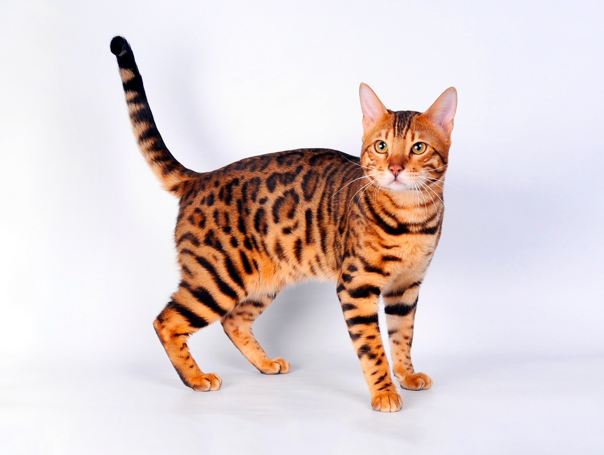

Этой кошке требуется много внимания, поэтому она вряд ли подойдет людям,
врастающим в диван. С ней придется общаться и объяснять все свои
передвижения по дому. Замечательно, что с Бетти у вас получится именно
диалог, ведь она издает пару десятков особенных звуков —
от классического мяу
до клекота, скрежета и курлыкания.